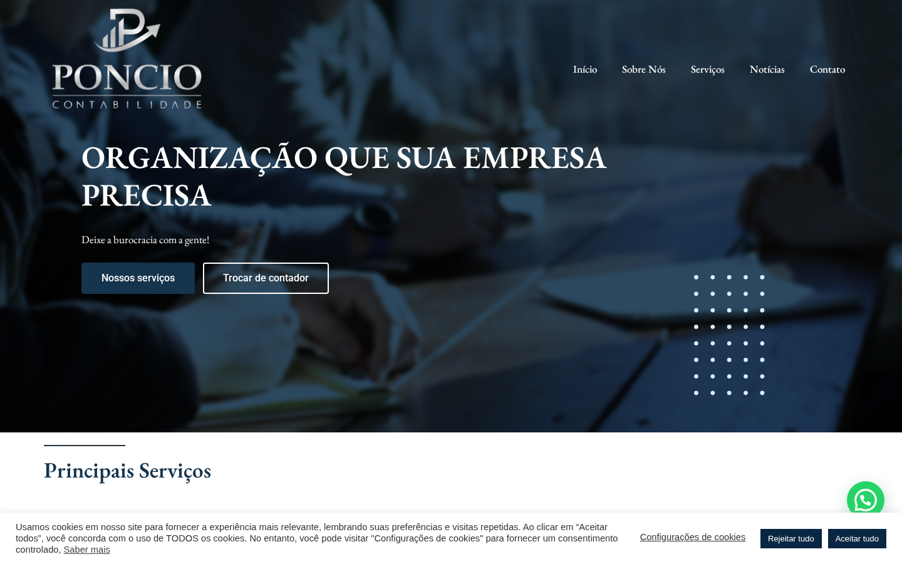
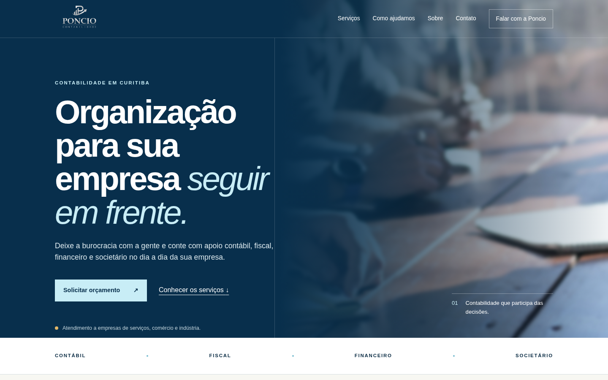

Experiência atual
Mensagem genérica, navegação com link principal malformado e sinais de conteúdo externo indevido no código.Preparado para Poncio Contabilidade · Julho de 2026
Oportunidade
Uma experiência segura, rápida e orientada aos momentos em que o empresário procura apoio: abrir uma empresa, trocar de contador ou organizar o financeiro.

Experiência atual
Mensagem genérica, navegação com link principal malformado e sinais de conteúdo externo indevido no código.
Direção proposta
Marca preservada, hierarquia mais clara e uma entrada direta para conversas por necessidade.Três prioridades
O domínio atual expõe links externos de cassino no conteúdo e resultados de busca, compatíveis com spam SEO ou comprometimento do WordPress.
Reconstruir em base limpa, revisar arquivos e banco, remover conteúdo injetado, trocar acessos e acompanhar indexação — sem republicar os endereços maliciosos.
O botão “Nossos serviços” aponta para uma URL terminada em servicos/%22, adicionando fricção no caminho principal.
Organizar entradas para abertura de empresa, troca de contador e financeiro, cada uma com contexto e chamada própria.
A página atual concentra muito HTML, repete depoimentos e não diferencia serviços ou necessidades comerciais.
Separar serviços prioritários, reduzir dependências e preparar eventos de contato para análise sem inventar promessas de resultado.
Entregáveis
Sequência
Backup isolado, inventário de acessos, escopo de conteúdo e plano de redirects.
Implementação em ambiente separado, revisão da Poncio e testes de conversão.
Troca controlada, validação do domínio, Search Console e monitoramento.
Apêndice técnico
A inspeção foi externa e não substitui uma análise do servidor, do banco de dados ou dos logs. A remoção definitiva exige acesso técnico, cópia segura e rotação de credenciais. Nenhum link malicioso é reproduzido neste documento.